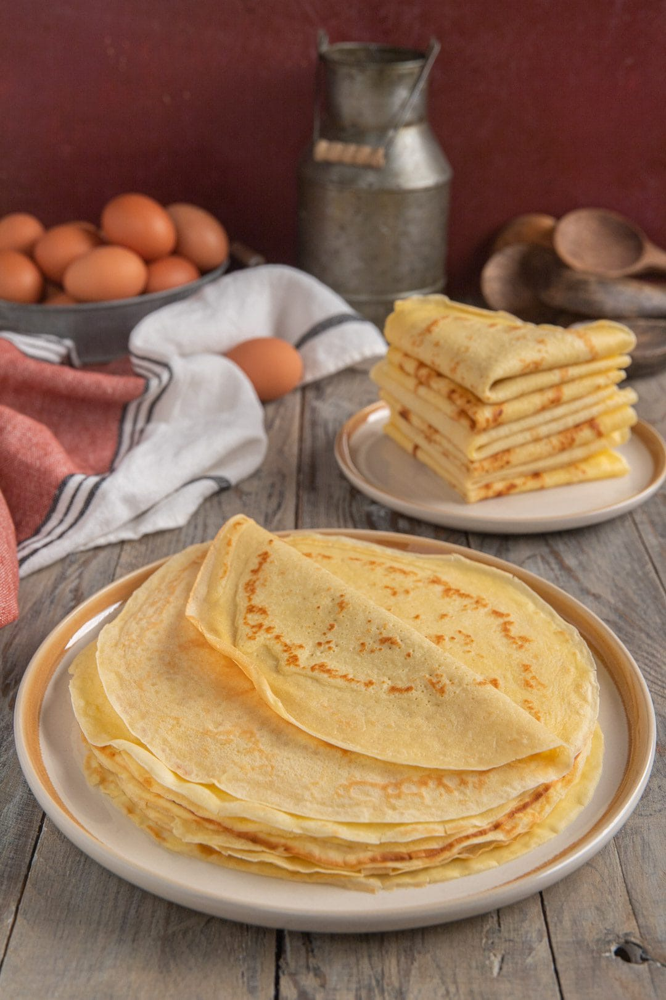

Ingredienti:
- farina
- uovo
- latte
- burro
- sale
Preparazione:
In una ciotola, mescola la farina con un pizzico di sale. Aggiungi l’uovo e inizia a mescolare, poi versa lentamente il latte, continuando a mescolare per evitare la formazione di grumi. Aggiungi il burro fuso e mescola fino a ottenere una pastella liscia e senza grumi. Riscalda una padella antiaderente e ungila leggermente con un po’ di burro. Versa un mestolo di pastella nella padella, ruotandola per distribuire uniformemente il composto. Cuoci per 1-2 minuti per lato, fino a quando le crepes saranno dorate. Continua a cuocere fino a esaurire tutta la pastella. Puoi farcire le crepes con ingredienti dolci o salati a piacere.
Tempo di realizzazione: 30 minuti
Difficoltà: 2/5

Torna alla pagina principale